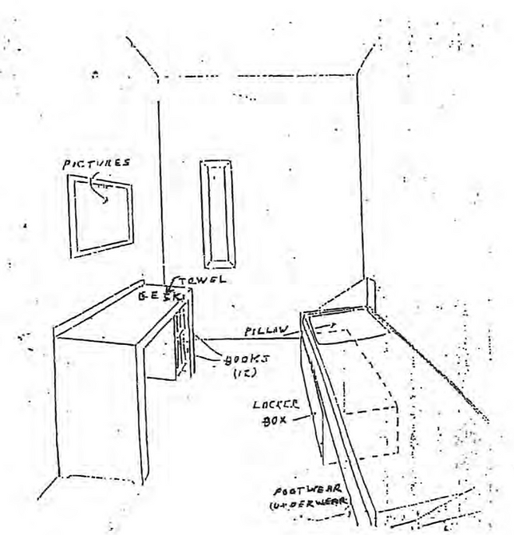
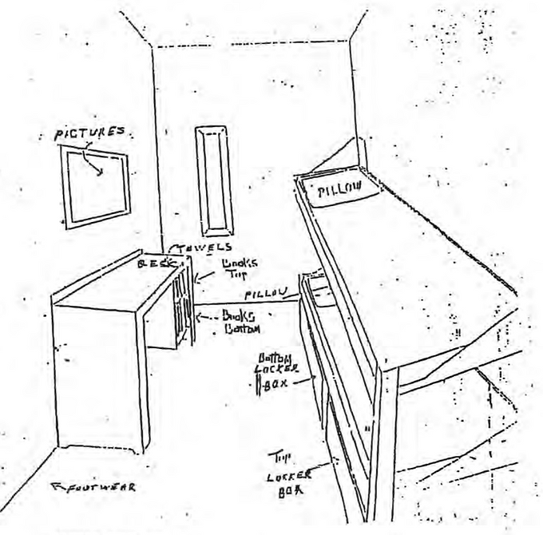

Solitary Confinement in Rhode Island
“I am doing 100 days in disciplin[ary confinement]. Other inmates have done 18 months. My day consists of being in my cell 22 hours and 50 minutes. I get one hour of recreation, locked in a cage with another inmate, and a 10 minute shower...on the weekends, I’m locked in my cell for 24 hours a day…
"I believe that the more we remain in these housing units, the worse we are...You are putting a human being in a cell for 48 hours straight at a time, for months at a time, and expect that person to remain stable? ...Treat someone like an animal, they tend to act like an animal.”
Marcel Montiera, High Security

Holding people in their cells for more than 22 hours a day is known internationally as “solitary confinement.”
However, the Rhode Island Department of Corrections (RIDOC) avoids using that term and instead refers to the practice with the euphemism “restrictive housing.”
In restrictive housing, incarcerated individuals are confined to an 8-by-10-foot cell for 22 to 24 hours each day, with little to no meaningful human contact.
RIDOC’s restrictive housing includes two main forms — administrative confinement and disciplinary confinement — as well as transitional confinement, which, under current policy, can still allow as little as two hours of out-of-cell time per day.
Administrative Confinement:
-
Individuals can be held in indefinite solitary confinement, with case reviews occurring only once every 90 days.
-
Under current RIDOC policy, people in restrictive housing are permitted just one in-person visit and one ten-minute phone call per week, further deepening their isolation from loved ones and support networks.
Disciplinary Confinement:
-
Incarcerated individuals can be sentenced to anywhere from 1 to 365 days in solitary confinement for each alleged rule violation.
-
During this time, visitation is prohibited, except for legal or professional visits permitted under RIDOC policy, and individuals are allowed only one phone call every thirty days.
Sketches of single and double bunk cells in RIDOC High Security facility. Sketches courtesy of RI Department of Corrections.

“I’ve seen people in seg [segregation] who don’t even know me or remember me and I did 6 months with them... It’s brutal and sad to watch someone’s mind break, a person who you’ve had regular conversations with. You don’t see them for a few years, and they can’t even hold a five minute conversation.”
Quandell Husband, Maximum Security
Transitional Confinement:
-
New status created in 2018
-
Minimum of two hours per day out-of-cell, five days per week (excluding weekends and holidays)
-
RIDOC does not consider this classification restrictive housing, even though individuals can be in their cells 22-24 hours a day
“The worst thing about segregation is that you truly feel like an animal not a human. Your mind races because you can only stare at the walls all day. You have nothing in your cell but some clothes and one book, a pen, and that’s it. You’re starving because you can’t get any commissary. You’re mentally and emotionally depressed because you can only think about getting out. It’s another way to dehumanize you and it’s a draconian way of tearing you down.”
Leroy Dorsey, Maximum Security
In 2019, RIDOC Director Patricia Coyne-Fague noted in her testimony to the RI House Finance Committee that when considering modern correctional practices, "keeping people in cells 23 hours a day is not the way to go."
Yet RIDOC continues to practice this through restrictive housing -- a practice of denying incarcerated individuals access to programming and meaningful interpersonal communication -- and even denies that solitary confinement exists at its facilities.
To learn more:
RIDOC's conditions of confinement policy